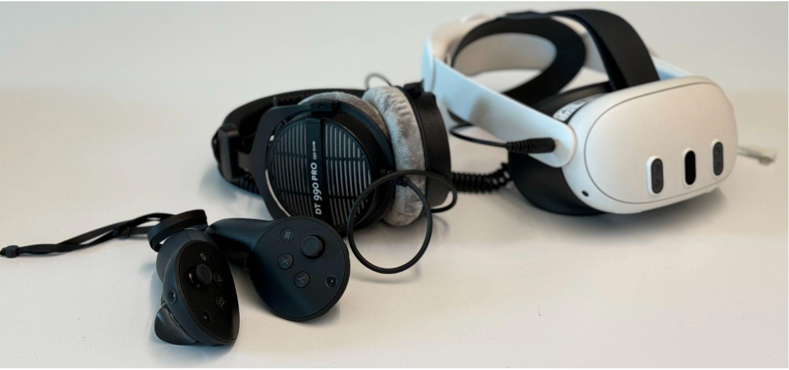
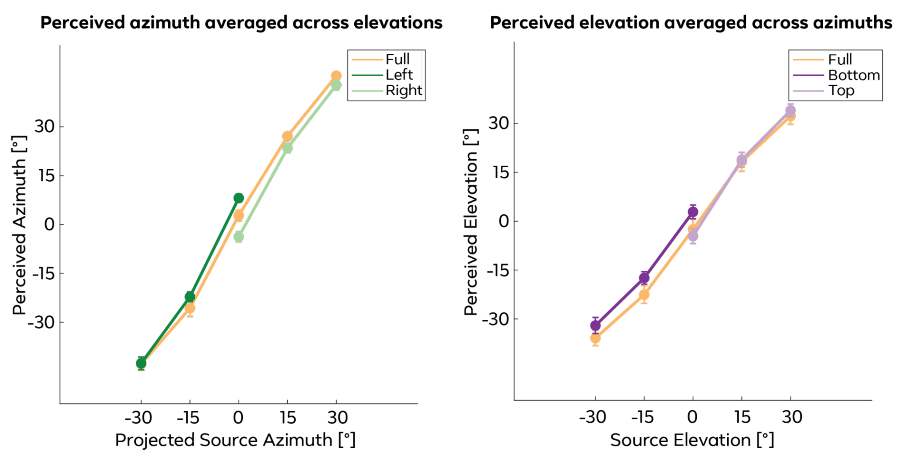
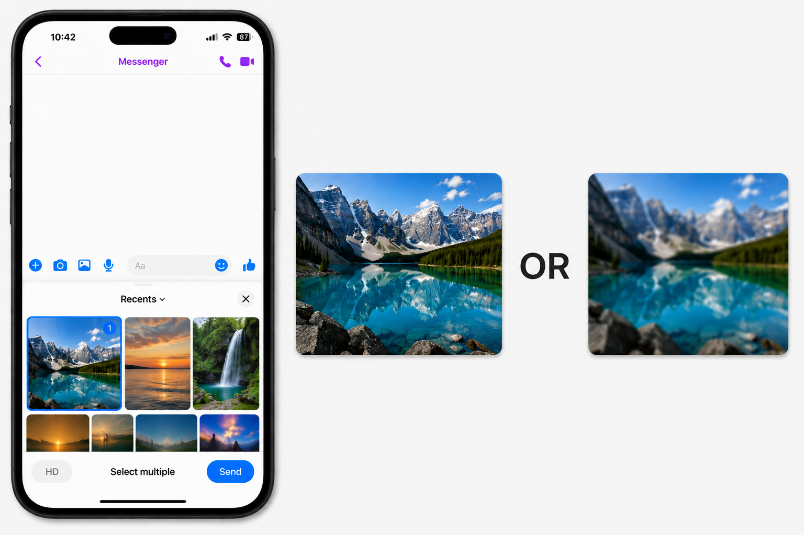

Case studies in user research and data science

Personalizing HRTFs (the acoustic filter that shapes how each individual perceives spatial audio, based on their unique ear/head/torso anatomy) is expensive and hard to scale. A key question for VR audio product development is whether users actually need personalized HRTFs, or whether a well-designed generic HRTF combined with brief training is sufficient.
Our experiments on the Quest 3 headset compared naive listeners vs. those who completed a short training block with visual feedback, tested on both a generic and their own personalized HRTF. Localization accuracy was measured across azimuth, elevation, arc error, and front/back and top/bottom confusions.
Training had a large effect: among naive listeners, 58% were unable to localize spatial audio from all directions; after training, only 12% remained non-sensitive. Training reduced average arc error by ~17°. HRTF personalization had a statistically significant but small effect (~5° reduction in arc error), mainly improving elevation at extreme angles. These findings suggest that a generic HRTF combined with brief training may suffice for most VR applications — with implications for how onboarding should be designed and whether costly personalization pipelines are needed.

Audio personalization for VR headsets assumes a stable mapping between acoustic cues and perceived sound locations. But if the auditory spatial map shifts dynamically based on recent listening context, personalization may not be as important in real-world use where the acoustic environment constantly changes.
We presented participants with sounds in blocked spatial contexts on the Quest 3 headset — either across the full range or restricted to the left, right, bottom, or top hemispace — and measured perceived azimuth and elevation without feedback. By comparing localization across contexts, we isolated how the statistics of recent sounds bias spatial perception.
Contextual blocking systematically shifted sound perception: sounds at 0° azimuth were perceived ~3–6° toward the contralateral side. Sounds in the bottom context showed an upward bias in perceived elevation (~4.5°); the top context had no significant effect. These results show that the auditory spatial map is dynamic — continuously recalibrating to the statistics of the current sound environment — with implications for how adaptive audio systems in VR should be evaluated and designed.
We often find that it's hard to hear your conversation partner in noisy environments. To develop Conversation Focus — a feature that amplifies the voice of the person you're talking to — we needed rigorous measurement of how much speech amplification on the glasses is needed and how to make conversation feel natural.
I co-led a series of onsite user studies measuring the thresholds at which participants could reliably understand speech across varying noise levels. Studies were conducted in controlled acoustic environments with real participants.
These studies directly informed the algorithm design and tuning of Conversation Focus. The feature has been shipped to Ray-Ban Meta users.
Holidays like Thanksgiving, Christmas, and New Year increase media traffic on Messenger as users share significantly more photos, videos, and audio with family and friends. Without accurate forecasting, engineering teams cannot proactively scale infrastructure, leaving systems exposed to reliability risk at peak load.
I performed forecasting analysis using historical traffic data to project holiday-period media send volumes for different countries and media types.
Results were shared with infrastructure and engineering teams ahead of the holiday period, enabling proactive capacity decisions.
To prioritize the messaging media roadmap, the team needed a rigorous, multi-dimensional view of how Meta's messaging apps compared to each other and to key external competitors, across media types, devices, network conditions, etc.
I conducted a benchmarking analysis of messaging apps looking at: (1) Engagement — topline media sends, active users, etc. using production data; (2) Performance, reliability, efficiency, and quality — metrics per media type; (3) User feedback — thematic analysis of App Store, Google Play, and Reddit reviews to surface common media-related pain points; and (4) Lab benchmarking — controlled studies comparing the performance across different apps.
The benchmarking identified concrete gaps across messaging apps, directly informing the messaging media roadmap. Findings were presented to leadership and cross-functional partners, translating user insights and production signals into prioritized engineering investments.

Users often have different pain points — some feel that the visual quality of media is too poor and blurry, while others prefer upload speed and reliability over high resolution.
Since upload performance and quality tradeoff (e.g., larger files take longer to upload), this suggests that improving the ML model can provide better user experience. I ran simulations to size the potential impact of the improved model across cohorts and used the results to inform experimentation priorities.
Analysis results were shared with the team; simulations helped size impact and suggest parameters ahead of A/B testing.
The Media Foundation team runs a high volume of A/B tests, but tracking experiment results, monitoring for regressions, and generating reports required significant manual effort.
I built an automatic metric collection scheduler and data pipelines to power the team's experiment tracking dashboard. I also built several analytics agent recipes with core table context, SQL query patterns, decision logic, and validation checks to accelerate investigation workflows.
Launches became easy to track, significantly reduced regression investigation time, and the agent recipes made it easier for the team to self-serve on experiment analysis.